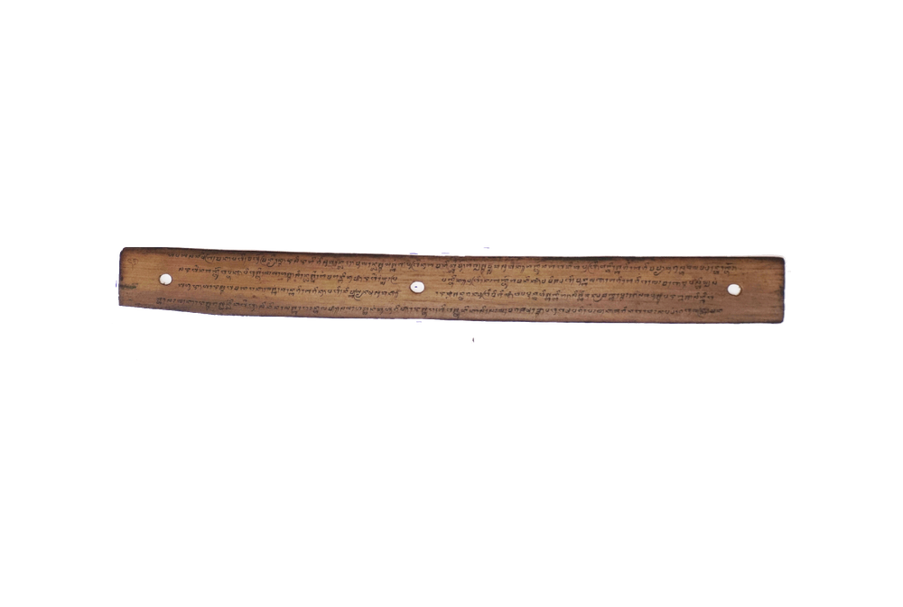

INDAR JAYA
-

Ejaan Latin:
131. taparek laiq bancingah. Manjakna leq bawon kursi,kursi mas masoca mirah,ratna winten lan widore,pnoq samantri punggawa,mamarek leq areppan,beri-beri dateng banjur,tapalagaq leq bancingah. Mapan beri-berina putri, salah-salahna tao balengkaq, awakna no kurus krege, brahmana kaliwat suka, sreminang kakurusna, banjuran pada teadu, pada bani banjur balaga. Garuda tasimbut ilip, si aran Raja Mahlela, rapet taoqna nya tokol, deket beri-beri belaga, kuciwa banjur rebaq, beri-beri dwen putri nu, mate banjuran tasurak. Putri banjur basremin, bagoloq sapin bajanjam, duh beri-beriku mate, aku nane jari bela, rengahna siq sang brahmana, manik putri si ngalulu, suka galah batang mesaq. Liwat sintunah beri-beri, si k.uciwa mata balaga,
Arti Indonesia:
131. di hadap di BalairungDuduk di atas kursi, kursi emas bermata mirah, ratna intan dan baiduri, penuh para mafttri puftggawa, meftghadap di depaftftya, biri-biri dataftglah, diadu di balairung sari.Arkian biri-biri sang puteri, hamper tak sanggup melangkah, tubuhnya kurus kerempeng, brahmana amat senang, melihat kekurusannya, lalu biri-biri diadulah, sama berani lalu berlagalah.Garuda ditutupi selimut, oleh yang bemama Raja Malela, dekat tempatnya ia duduk, dekat biri-biri yang berlaga, terkalahkan lalu rehab, biri-biri milik sang puteri, mati lalu disoraki.Puteri lalu menangis, berguling sambil meratap, duh biri-birikumati, aku sekarang jadl taruhannya, didengar oleh brahmana, ucapan puteri yang putus asa, mau menikam diri sendiri.Teramat saying pada biri-birinya, yang kalah mati berlaga,
Arti Inggris:
131.